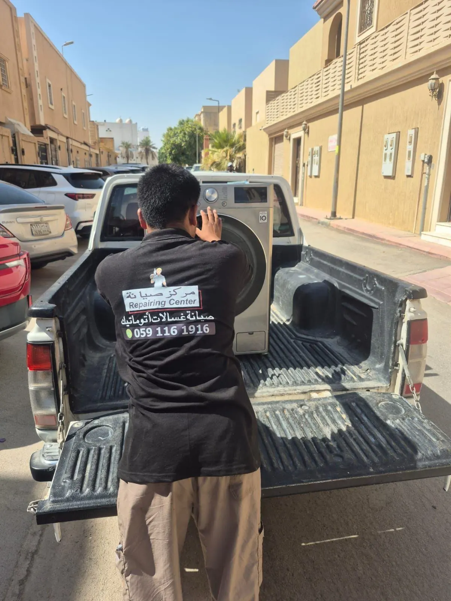

تصليح غسالات اتوماتيك في شرق الرياض
مقرنا في حي اليرموك شرق الرياض. في هذه الصفحة تعرف كيف تحجز زيارة من الشرق، وماذا يحدث عند بابك، وماذا تفعل إذا كان الماء على الأرض الآن.
نشر بواسطة إصلاح الغسالات الأوتوماتيكية · آخر تحديث: نوفمبر 2026
هذه الصفحة جزء من دليلنا لـ صيانة غسالات اتوماتيك في الرياض.

ما أحياء شرق الرياض التي تزورونها؟
يزور فنيونا المنازل في اليرموك والنسيم والروضة والحمراء وغرناطة والخليج والقادسية والرمال. وإذا كنت في حي اليرموك أو حي القادسية فلكل منهما صفحة قصيرة خاصة.
ولأن مقرنا في الشرق فأنت قريب منا. ومع ذلك يعتمد موعد الزيارة على اليوم والساعة التي تتصل فيها، ولذلك نؤكده معك ولا نعد برقم مسبق.
كيف أصف عنواني بالهاتف؟
العنوان الواضح يوفر عليك اتصالا ثانيا. قله بهذا الترتيب ليصل الفني وهو يعرف وجهته.
- اسم الحي، مثل الحمراء أو غرناطة.
- الشارع، أو مكان قريب لا مانع عندك من ذكره.
- فيلا أو عمارة سكنية، ورقم الدور إن كانت شقة.
- مكان الغسالة: المطبخ أو غرفة الخدمة أو الشرفة.
- رقم هاتف يجيب عليه أحد عندما يصل الفني إلى الباب.
وإن لم أستطع شرح الطريق؟
أرسل موقعك على واتساب، فهو في الغالب أوضح من الكلام. وإذا كان المدخل صعب الرؤية من الشارع فأخبرنا أي بوابة أو باب نستخدم.
ماذا تشمل الزيارة؟
يأتي الفني إلى منزلك ويفحص الغسالة في مكانها. وتسير الزيارة بالترتيب نفسه كل مرة. أغلب الإصلاحات تتم في اليوم نفسه الذي تتواصل فيه معنا، لكن ذلك يعتمد على العطل وعلى الحاجة إلى قطعة. وتجد الخدمة كاملة في صفحة تصليح الغسالات الاتوماتيك.
- التشخيص أولا، قبل فك أي شيء.
- نشرح لك العطل والتكلفة قبل بدء أي عمل.
- لا يبدأ شيء إلا بعد موافقتك.
- ضمان 30 يوما على القطع والعمل في الإصلاح.
ماء على الأرض الآن؟
افعل الخطوات بهذا الترتيب. ثم يشرح لك دليل تسريب الغسالة الأسباب المحتملة.
- أغلق صنبور الماء خلف الغسالة.
- افصل الغسالة عن الكهرباء. وإذا كانت الأرضية قرب المقبس مبتلة فأطفئ القاطع من اللوحة ولا تلمس القابس.
- ضع مناشف حتى لا يصل الماء إلى الغرف الأخرى.
- صوّر التسريب والشاشة وأرسل الصور على واتساب.
- اتصل وقل إن التسريب ما زال مستمرا لنبحث عن أقرب موعد.
هل يفرق الأمر بين الفيلا والشقة؟
لا يمنع ذلك الإصلاح، وكل ما يتغير هو ما نسألك عنه. في الشقة أخبرنا بالدور، وهل يوجد مصعد، وهل للعمارة قواعد على الزيارات. وفي الفيلا أخبرنا هل الغسالة داخل البيت أو في غرفة منفصلة. ويوضح دليل شرق وشمال وجنوب الرياض كيف تختلف المناطق الثلاث.
ماذا أجهز قبل الاتصال؟
تقييمنا على قوقل 4.8 من 264 مراجعة، وأكثر الرسائل فائدة لنا هي القصيرة والمحددة. جهّز ما يلي.
- ماركة الغسالة وموديلها، وغالبا تجدهما على ملصق على الجهاز.
- أي رمز على الشاشة. ومعناه يختلف حسب الموديل، فراجع دليل الغسالة وأرسل لنا الرمز.
- متى بدأ العطل، وماذا كانت الغسالة تفعل وقتها.
وإذا احتاجت الغسالة إلى قطعة؟
بعض الأعطال تحتاج إلى قطعة. يخبرك الفني بذلك عند التشخيص مع التكلفة، وأنت تقرر. وإذا لم تكن القطعة معه فنشرح لك الخطوة التالية. أغلب الإصلاحات تتم في اليوم نفسه، لكن غياب القطعة قد يغير ذلك، فاسألنا من البداية.
هل تستحق غسالتي القديمة الإصلاح؟
اسأل الفني. تسمع العطل والتكلفة أولا فيبقى القرار لك. ويعرض دليل الإصلاح أو الاستبدال أسئلة تسألها لنفسك قبل أن تقرر.
هل تصلحون أجهزة أخرى في الشرق؟
نعم. الزيارة نفسها تناسب غسالات الصحون والنشافات والغسالات المدمجة مع النشافة. راجع صفحتي تصليح غسالات الصحون وتصليح النشافات.
الأسئلة الشائعة
نعم. نحن خدمة صيانة منزلية مستقلة مقرها اليرموك، ونزور المنازل في أنحاء الرياض.
نعم، وهذا يساعدنا. صورة الشاشة أو ملصق الموديل أو مكان الماء تخبرنا بالكثير قبل وصولنا.
نعم. يشرح لك الفني العطل والتكلفة أولا، ولا يبدأ أي عمل إلا بعد موافقتك.
يغطي القطع والعمل في الإصلاح الذي أجريناه لك. وإذا عاد العطل نفسه خلال هذه المدة فاتصل بنا.
احجز زيارة في شرق الرياض
أرسل اسم حيك وماركة الغسالة ووصفا قصيرا للعطل. اتصل بنا أو راسلنا على واتساب على +966 59 116 1916.